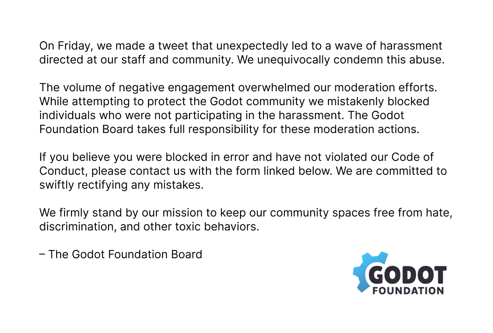

はじめに
Xにて「Godot公式から大量のユーザーブロックがあった」といったポストが溢れました。
言語の壁・文化の壁もあり、日本ユーザーの中で混乱と不安が起きたことと思います。
日本国内のGodotユーザーの不安を少しでも解消できるよう、現段階での状況をまとめました。
※結論から言いますと、今後のGodotのコア開発にまったく影響はありませんので、引き続き安心してご使用いただけます。
要点
- 明らかにCode of Conductに反する暴言を行うアカウントをブロックし、その件を拡散するアカウントもブロックしました。
- その流れの中で、意図せず本件を拡散してしまった本件と無関係のユーザーも巻き込まれる形でブロックされてしまいました。
- この無関係なユーザーブロックについてはGodot Foundationは責任を負い、問い合わせを行うことで解除されます。
- 暴言などのCode of Conduct違反行為を許すことなく、これからも継続してコミュニティを守ります。
- Xananax氏の言葉遣いに対する言及が一連の流れで引き合いに出されましたが、別の非公式Godot Discordサーバーのモデレーターであり、Godot Foundationと雇用関係になく、過去の発言に対しても批判しています。
ファクトチェック
Godotコアメンバーであるトカゲ氏から、SNSのファクトチェックをいくつかいただいているので引用します。
コミュニティマネージャーが独断で Godot ブランドを私物化した
誤り。ブロック等のモデレーションは個人攻撃から守るためであり、彼女の独断ではなくマネジメントチーム内での決定。Woke というネタも他のメンバーが反対したりはしていない。
何もしていないのにブロックされた
真である可能性はあるが、個人攻撃やそれを行なっている人の支援をしていないかどうか見直しが必要。本当に間違いであれば フォーム から連絡すれば解除してもらえる。
支援金が 60K->54K
誤り。60K だったのは Unity 騒動時の一時で今回の騒動より前から 54K だった。反ポリティカルコレクトネスのパトロンからのキャンセルは出たが、逆にそれらの集団を問題と思っているパトロンが増えたためほぼ影響はない。
一部の Godot 開発者がフォークして Redot を作った
誤り。誰も Godot のコアメンバーは抜ける事はない。反ポリティカルコレクトネスのコントリビューターが居てその人がそっちへ行く事はあるかもしれないがそのような人は Godot のコアメンバーには居ない。
なので、今後のコア開発には「全く」影響はなく、引き続き Godot を安心して利用してもらって大丈夫です。別にエッチなゲームを作ったり特定政党を敵として設定したゲームを作ったからといって ban されたりはしません。
CoC が適用されるのは「ソーシャルメディアにおける行動」についてであって、Godot でどんなゲームを作ろうと Godot 公式はその内容の検閲については絶対に関与する事はなく、作ったゲームの内容によってコミュニティから追放したりする事はありません。
ただし、例えば特定個人を侮辱するためのゲームを作り、それをソーシャルメディアで宣伝した、となればソーシャルメディアにおける CoC 違反によりコミュニティへの出入りに対して何らかの措置がとられる可能性はありますが、それでも Godot の使用自体を禁止することはありません。（物理的にも不可能なので）
CoC が適用されるのは「ソーシャルメディアにおける行動」についてであって、Godot でどんなゲームを作ろうと Godot 公式はその内容の検閲については絶対に関与する事はなく、作ったゲームの内容によってコミュニティから追放したりする事はありません。Godot のポリシー的にはあくまで個人攻撃を許さないのであって政治的には常に中立です。
公式（Godot Foundation）からの声明
機械翻訳
金曜日、私たちはツイートを投稿しましたが、それが予期せぬ形でスタッフやコミュニティに向けられた嫌がらせの波を引き起こしました。
私たちはこの虐待を明確に非難します。否定的なエンゲージメントの量が、私たちのモデレーションの努力を圧倒しました。
Godot コミュニティを保護しようとした際に、嫌がらせに参加していない個人を誤ってブロックしてしまいました。
Godot Foundation理事会は、これらのモデレーション活動に対して全責任を負います。
誤ってブロックされたと思われる場合、および当社の行動規範に違反していないと思われる場合は、以下のリンク先のフォームを使用して当社までご連絡ください。間違いがあった場合は速やかに修正するよう努めます。
私たちは、コミュニティスペースを憎しみ、差別、その他の有害な行為から守るという使命をしっかりと守ります。
― Godot Foundation 理事会
原文

声明で触れられているXananax氏からの謝罪
Xananax氏は当時の言葉遣いを反省していることを改めてポストしています。
In 2016, I made very stupid jokes involving the N-word. After being insulted that way in other communities, I directed those slurs at myself in derision.
— Xananax (@xananax) September 30, 2024
I realised it was an insensitive thing to do, and I didn't do it anymore after that.
I once again deeply apologize. https://t.co/O7lSiDuMOD
Godot Japanとして
Godot JapanコミュニティもGodotのCode of Conductが適用されますので、嫌がらせ行為や個人攻撃はBAN・ブロック対象です。
ですが ―Godotコミュニティも同様だと思いますが― 基本的にコミュニティを運営するにあたってブロックや排除は望んでません。
多くのメンバーの交流を守ることを目的にしていること、その流れの中で人間が対応しているためにヒューマンエラーが発生してしまうことはご理解いただくようお願い申し上げます。
ここまで読んでくださった方は十分ご理解いただいているかと思いますが、Godot自体にまったく影響はありませんので、引き続きご使用ください。
今後ともGodotおよびGodot Japanをよろしくお願いいたします。